Smart Document Platform 내부 구조 및 기술 설계
폐쇄망 환경에서 동작하는 3-Tier 구조의 문서 플랫폼입니다. 프론트엔드(정적 HTML), 백엔드(FastAPI), AI 엔진(Ollama)이 각각 독립된 프로세스로 운용되며, 빌드 도구나 외부 클라우드 없이 동작합니다.
이 문서는 플랫폼의 서버 구성, 서비스 계층, API 설계, 폴더 구조, 운영 준비 상태를 다룹니다. "어떻게 쓰는가"가 아닌 "어떻게 만들어졌는가"에 초점을 맞춘 기술 참조 문서입니다.
2대 서버, 3개 프로세스로 운용합니다.

시스템 구성도 — 프론트엔드, 백엔드, AI 엔진 3계층 구조
| 계층 | 서버 | 역할 |
|---|---|---|
| 프론트엔드 | Windows VM :8080 Tomcat 또는 Python http.server |
HTML, JS, CSS 정적 파일 서빙. 프레임워크 없이 Vanilla JS로 구성. |
| 백엔드 | Windows VM :8000 FastAPI + Uvicorn |
인증, 검색, 채팅, 번역, 비교, 설정 등 55+ API 엔드포인트 제공. |
| AI 엔진 | Linux GPU :11434 Ollama (NVIDIA L40-48Q) |
LLM 추론(gemma3), 임베딩(bge-m3), 리랭킹(bge-reranker-v2-m3). |
| 기능 | 백엔드 | Ollama | 비고 |
|---|---|---|---|
| 문서 열람 (웹북) | 불필요 | 불필요 | 정적 서버만으로 동작 |
| 키워드 검색 | 필요 | 불필요 | search-index.json 사용 |
| 하이브리드 검색 + AI 채팅 | 필요 | 필요 | 벡터 검색 + LLM 추론 |
| PDF 번역 (Notebook) | 필요 | 필요 | pdf2zh + Ollama |
| 문서 비교 (Verify) | 필요 | 선택 | AI 분류 사용 시 필요 |
| 인증 / 관리자 설정 | 필요 | 불필요 | SQLite + JSON 기반 |
백엔드는 API 라우터 + 서비스 모듈 2계층 구조입니다.
| 라우터 | 엔드포인트 | 주요 기능 |
|---|---|---|
auth.py | 5개 | 로그인, 세션, 사용자 CRUD |
search.py | 3개 | 키워드, 벡터, 하이브리드 검색 |
chat.py | 2개 | RAG 채팅, 세션 관리 |
translator.py | 30+개 | PDF 업로드, 번역, 추출, 요약, Q&A, 폴더 |
compare.py | 11개 | 비교, 유사도, 규칙 검증, 내보내기 |
upload.py | 3개 | DOCX/PDF 변환, 인덱스 재생성 |
settings.py | 3개 | 런타임 설정 CRUD |
menu.py | 2개 | 메뉴 트리 조회/저장 |
| 영역 | 모듈 수 | 주요 모듈 |
|---|---|---|
| Explorer | 10개 | keyword_search, vector_search, embedding_client, reranker, rag_agent, conversation, query_rewriter, llm_provider, question_router, chat_formatter |
| Notebook | 6개 | translator_service, md_extractor, ai_summary, notebook_chat, pmt_runner, marking_service |
| Verify | 4개 | compare_service, similarity_service, rules_engine, score_calculator |
| 공통 인프라 | 6개 | auth_service, settings_service, analytics_service, backup_service, health_service, session_manager |
| 변환 도구 | 2개 | docx_converter (표 병합, OMML-MathML), word_preprocessor (COM) |
프레임워크 없이 Vanilla JS + 모놀리식 HTML 구조입니다.
| 결정 | 선택 | 근거 |
|---|---|---|
| 프레임워크 | Vanilla JS (ES5+) | 폐쇄망에서 npm/빌드 도구 불필요. 브라우저 호환성 최대화. |
| 페이지 구조 | 서브시스템당 단일 HTML | index.html, translator.html, compare.html, login.html 4파일. |
| 콘텐츠 로딩 | fetch() + #main-content | 메뉴 클릭 시 HTML 프래그먼트를 동적 삽입. SPA와 유사한 UX. |
| 상태 관리 | 전역 객체 (AppState) | menuData, searchIndex, currentPage 등 최소 상태만 관리. |
| 디자인 시스템 | CSS 변수 (tokens.css) | 색상, 간격, 둥글기, 트랜지션 등 토큰화. 다크모드 자동 전환. |
| 모듈 | 역할 |
|---|---|
app.js | 초기화, 콘텐츠 로딩, 브레드크럼, URL 라우팅 |
tree-menu.js | 좌측 트리 메뉴 렌더링, 검색 필터, 업로드 |
auth.js | 3-role RBAC, 로그인 게이트, 세션 관리 |
ai-chat.js | RAG 챗봇 UI, NDJSON 스트리밍, 섹션 네비게이션 |
search.js | 전체 텍스트 검색, 하이브리드 검색 UI |
editor-core.js | Monaco 에디터 래퍼, 분할 뷰, Strategy 패턴 |
admin-settings.js | 관리자 설정 GUI (6탭) |
config.js | DISPLAY_CONFIG, AI_CONFIG, AUTH_CONFIG 등 상수 |
toast.js | 공통 토스트 알림 |
platform-header.js | 공통 헤더 (시스템 전환, 테마, 네비게이션) |
16개 CSS 파일이 역할별로 분리되어 있습니다.
tokens.css가 모든 디자인 토큰(색상, 간격, 둥글기, 그림자)을 정의하고,
각 컴포넌트 CSS가 이를 참조합니다. 하드코딩된 색상값은 사용하지 않습니다.
| 파일 | 역할 |
|---|---|
tokens.css | 디자인 토큰 (색상, 간격, 둥글기, 트랜지션) |
components.css | 공통 컴포넌트 (버튼, 입력, 배지, 스피너, 슬라이더) |
modal.css | 모달 오버레이/박스 공통 구조 |
content.css | 콘텐츠 영역 타이포그래피, 가이드 po-* 클래스 |
auth.css | 인증 모달, 로그인 게이트, 권한별 표시 제어 |
파일 기반 저장 + SQLite 조합으로 운용합니다.
| 데이터 | 저장 방식 | 보호 방식 |
|---|---|---|
| 메뉴 트리, 설정, 사용자 목록 | JSON 파일 | 원자적 저장 (tmp → rename) |
| 검색 인덱스 | JSON + FAISS 바이너리 | 재생성 가능 (원본 HTML에서 복원) |
| 인증/세션 | SQLite (auth.db) | PBKDF2-SHA256 260K iterations |
| 접속 통계 | SQLite (analytics.db) | 일일 백업 (30일 보존) |
| Notebook 작업물 | 파일시스템 (사용자별 디렉토리) | data/translator/{username}/{doc_id}/ |
| 콘텐츠 (웹북) | HTML 파일 | contents/ 디렉토리, 업로드 시 자동 백업 |
| 영역 | 구현 |
|---|---|
| 비밀번호 저장 | PBKDF2-SHA256, 260,000 iterations, secrets.token_hex(32) 솔트 |
| 세션 관리 | HttpOnly 쿠키, SameSite=lax, secrets.compare_digest() 비교 |
| 접근 제어 | 3단계 RBAC (viewer/editor/admin). API 레벨 + CSS 클래스 이중 제어. |
| 네트워크 | 폐쇄망 전용. CORS origin 환경변수로 제한. 외부 통신 없음. |
| 데이터 보호 | 원자적 JSON 저장 (tmp → rename). 일일 백업 자동 실행. |
운영 안정성 강화(Plan-22) 완료 후 평가 결과입니다.
| 평가 항목 | 점수 | 상세 |
|---|---|---|
| 인증/인가 | 8 / 10 | PBKDF2 + RBAC + HttpOnly 쿠키 |
| 데이터 보호 | 9 / 10 | 원자적 저장, 자동 백업 30일 |
| API 보안 | 7 / 10 | Depends(require_admin) 전역 적용 |
| 로깅/모니터링 | 8 / 10 | RotatingFileHandler 10MB x 5, 구조화 로깅 |
| 에러 처리 | 8 / 10 | Graceful Shutdown, 고착 태스크 리셋 |
| 프론트엔드 | 8 / 10 | content-visibility 최적화, 수렴 스크롤 |
| DB 구조 | 8 / 10 | SQLite WAL 모드, 적정 규모 |
| 서버 구성 | 5 / 10 | 프로세스 관리(NSSM) 미적용 |
| 항목 | 권장 | 산정 근거 |
|---|---|---|
| RAM | 16 GB | OS+Tomcat 3GB + FastAPI 500MB + 리랭커 2GB + FAISS 100MB + 번역 1GB |
| 디스크 | 100 GB SSD | 현재 16GB, 연간 증가 약 15GB (문서 + 백업) |
| CPU | 12코어 이상 | FastAPI 비동기 처리 + 문서 변환 병렬 실행 |
| GPU | NVIDIA L40 48GB | Ollama LLM 추론, 임베딩, 리랭킹 (Linux 서버) |
| 영역 | 기술 |
|---|---|
| 백엔드 | Python 3.11, FastAPI 0.128, Uvicorn (비동기) |
| 프론트엔드 | Vanilla JS (ES5+), 단일 HTML, CSS 변수 디자인 시스템 |
| LLM | Ollama + gemma3:27b (추론), gemma3:4b (경량 작업) |
| 임베딩 | bge-m3 (1024차원, 한/영 혼합) |
| 리랭커 | bge-reranker-v2-m3 (Cross-encoder) |
| 벡터 DB | FAISS IndexFlatL2 (인메모리) |
| PDF 번역 | pdf2zh (레이아웃 보존), PyMuPDF4LLM (마크다운 추출) |
| 문서 변환 | python-docx + COM 전처리, OMML → MathML 18종 |
| 데이터 저장 | SQLite (인증/통계) + JSON 파일 (설정/인덱스) |
| 정적 서버 | Tomcat 7.0 또는 Python http.server |